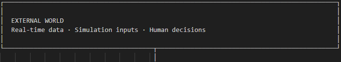
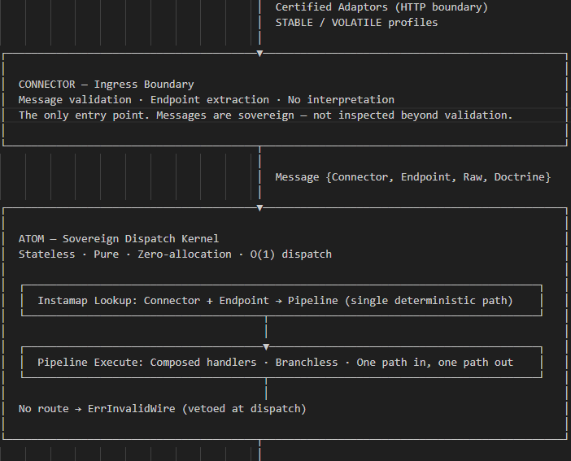
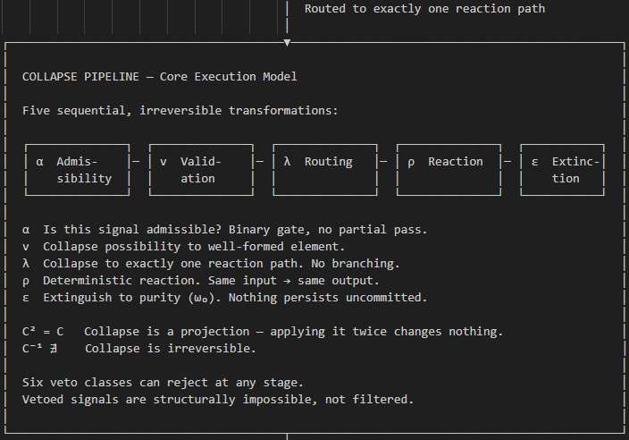
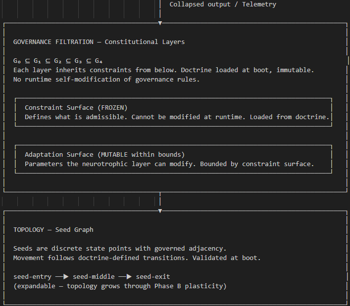
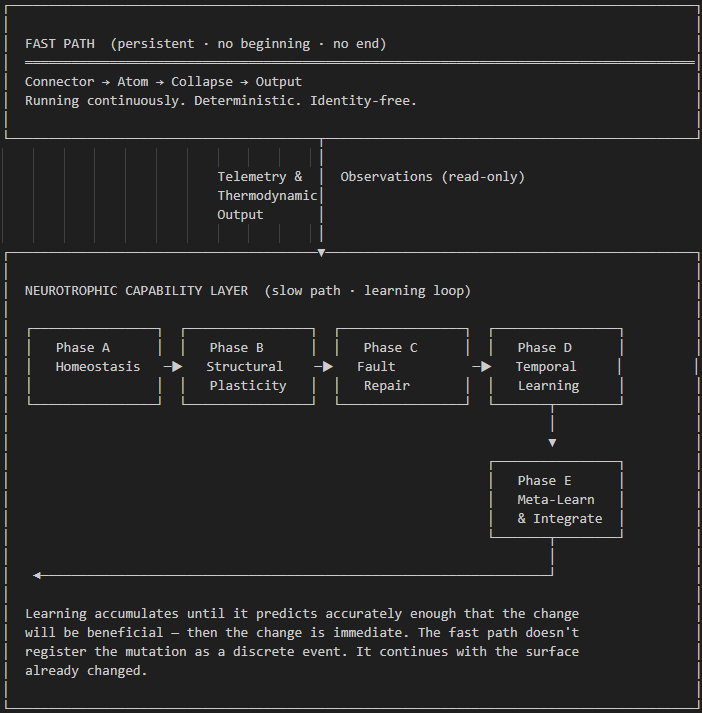
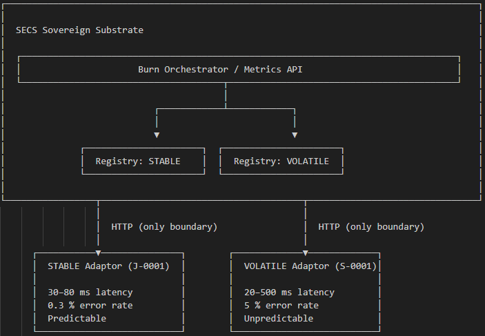

System Architecture
Neurotrophic Operating System — from signal to resolution
A deterministic, identity-free substrate that processes signals through a governed collapse pipeline. Every input either resolves to a unique fixed point or is vetoed. Nothing persists uncommitted. Nothing executes ungoverned.
The system operates as a Neurotrophic OS — a substrate that maintains its own vitality, adapts its own structure, repairs its own faults, learns from its own history, and governs its own learning. External systems connect through certified adaptors.
System Layers
Every signal travels one path, top to bottom. No branches. No ambiguity.




Collapse Pipeline
Five sequential, irreversible transformations. Each signal enters the pipeline once and exits as either a resolved output or a veto. No branching. No partial pass.
C² = C — Collapse is a projection. Applying it twice changes nothing.
C¹⁻ ∄ — Collapse is irreversible.
Six veto classes can reject at any stage. Vetoed signals are structurally impossible, not filtered.
Governance Filtration
Constitutional layers. Each inherits constraints from below. Doctrine loaded at boot, immutable at runtime. No runtime self-modification of governance rules.
Constraint Surface
- FROZEN — defines what is admissible
- Cannot be modified at runtime
- Loaded from doctrine at boot
Adaptation Surface
- MUTABLE within bounds
- Parameters the neurotrophic layer can modify
- Bounded by the constraint surface
Neurotrophic Layer — Governed Adaptation
The neurotrophic layer sits above the fast path and observes its output. It never interrupts the fast path. It learns from it, adapts parameters within bounds, and feeds changes back — but the fast path continues running unchanged through every adaptation cycle.

Phase A — Governed Homeostasis
Observes fast-path thermodynamic output (rate, latency, error, throughput). Evaluates against doctrine-defined set points. Adjusts operational parameters within constitutional bounds. The slow path watches, measures, reweights — the fast path runs unchanged.
Phase B — Structural Plasticity
Grows and prunes topology nodes. Adds new seeds, strengthens connections, removes underperforming paths. All growth bounded by the frozen constraint surface. This is how the system’s structure evolves without violating its constitution.
Phase C — Cross-Domain Fault Repair
Astrocyte-model mediator. Detects faults across domain boundaries. Propagates bridge signals. Repairs damaged circuits before learning proceeds. Learning on damaged circuits produces drift — Phase C closes that gap.
Phase D — Temporal Learning
Learns from history. Applies reward mechanisms. Balances beneficial outcomes against hostile ones. Accumulates evidence until prediction confidence reaches threshold. Adjusts weights, not rules.
Phase E — Meta-Learning & Integration
Learns how to learn. Adjusts learning parameters (not logic). Coordinates across all four preceding phases. Reward functions are Founder-defined only — the system cannot author its own goals. Topology-aware learning adapts based on structural context.
Adaptor Architecture — External Connections
Adaptors are external certified processes. Not part of the substrate. HTTP boundary only. The substrate never changes — only the adaptor configuration surface changes.

Stable Profile
- 30–80 ms latency
- 0.3% error rate
- Predictable — deterministic behaviour
Volatile Profile
- 20–500 ms latency
- 5% error rate
- Unpredictable — real-world variance
Same substrate. Same collapse pipeline. Same governance. Different constraint surface per vertical.
| Vertical | Regulation | Status |
|---|---|---|
| Fintech | MiFID II, SOX | Proven |
| Healthcare | HIPAA, FDA 21 CFR Part 11 | Proven |
| Defence | NATO STANAG 4586, MIL-STD-882E | Proven |
| Insurance | Solvency II, IDD | Proven |
| Legal | EU AI Act (Art. 14), ECHR Art. 6 | Proven |
| Energy | NERC CIP, IEC 62443 | Proven |
| Automotive | ISO 26262, SOTIF (ISO 21448) | Proven |
| Cybersecurity | NIST CSF 2.0, SOC 2 Type II | Proven |
| Supply Chain | EU CSRD, CSDDD, Basel III | Proven |
| EdTech | FERPA, COPPA, EU GDPR (Art. 22) | Proven |
Observability — Dual-Lane Cockpit
Two independent cockpits. Same KPI set. Different data sources. Zero shared state.
Stable Cockpit
Rate Surface
- Current RPS
- Min / Max / Avg
- Historical Trend
Timing Surface
- P50 / P95 / P99
- Jitter
Reliability Surface
- Error Rate / Count
- Success Rate
Governance Surface
- Throttle Rate
- Capacity Utilisation
- Accepted / Throttled
Muted · Precise · Minimal
Volatile Cockpit
Rate Surface
- Current RPS
- Min / Max / Avg
- Historical Trend
Timing Surface
- P50 / P95 / P99
- Jitter
Reliability Surface
- Error Rate / Count
- Success Rate
Governance Surface
- Throttle Rate
- Capacity Utilisation
- Accepted / Throttled
Expressive · Dynamic · Wide
Structural Properties
| Property | Enforcement |
|---|---|
| Deterministic | Same input → same output. Always. No unseeded randomness. |
| Identity-free | No personal identifiers in the substrate. Constitutional. |
| Irreversible | Collapse cannot be undone. C¹⁻ does not exist. |
| Idempotent | C² = C. Collapsing a collapsed state changes nothing. |
| Governed | All adaptation bounded by frozen constraint surface. |
| Additive | Each neurotrophic phase adds capability. Nothing modified. |
| Constitutional | Doctrine loaded at boot, immutable at runtime. |
Execution Summary
Signal to resolution. One path.
The substrate never changes. Only the constraint surface changes.